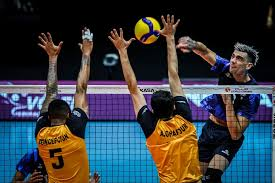

Com desfalques, Itambé Minas perde para Joinville e segue sem vencer na Superliga

Sem o elenco completo, equipe de Belo Horizonte não conseguiu superar o adversário diante da sua torcida
O Itambé Minas perdeu para o Joinville Vôlei por 3 a 0 (27 a 25/ 22 a 25/ 25 a 23), nesta segunda-feira (27), na Arena UniBH, em Belo Horizonte, pela segunda rodada da Superliga Masculina de Vôlei.
Com a derrota, o MTC segue sem ganhar na competição. Na primeira rodada, a equipe foi superada pelo Guarulhos por 3 a 2.
Essa foi a primeira vitória do Joinville. Na estreia, a equipe perdeu por 3 a 0 para o Sesi Bauru, próximo adversário do MTC.
Com o triunfo desta segunda, a equipe do Sul do Brasil soma os primeiros três pontos na tabela. O Minas tem um, pelo tie-break na primeira rodada.
O destaque da vitória catarinense foi o oposto Jaques, maior pontuador da partida com 19 pontos. Já pelo Minas, o ponteiro Renato Russomano, o ‘Pato’, foi quem pontuou mais vezes, com 13 pontos.
Apesar do resultado, a partida não foi fácil para o Joinville. Todos os sets foram equilibrados e com pressão de ambas as equipes.
Desfalques
O Minas jogou desfalcado nesta segunda. Após a derrota para o Guarulhos, na primeira rodada, oito dos 13 atletas da equipe principal minastenista apresentaram sintomas gripais, como febre, dor de garganta e dores no corpo.
O central Michel e o oposto Samuel ficaram de fora da partida em decorrência disso.
O clube informou que os atletas ainda não tiveram diagnóstico confirmado, mas estão sob os cuidados do departamento médico do MTC.
Próximos jogos
O Minas volta às quadras no sábado (1º), às 21h (de Brasília), contra o Sesi Bauru, na Arena Paulo Skaf, em Bauru (SP).
Já o Joinville encara o Suzano Vôlei, também no sábado (1º), às 18h30, no Centreventos Cau Hansen, em Joinville (SC).